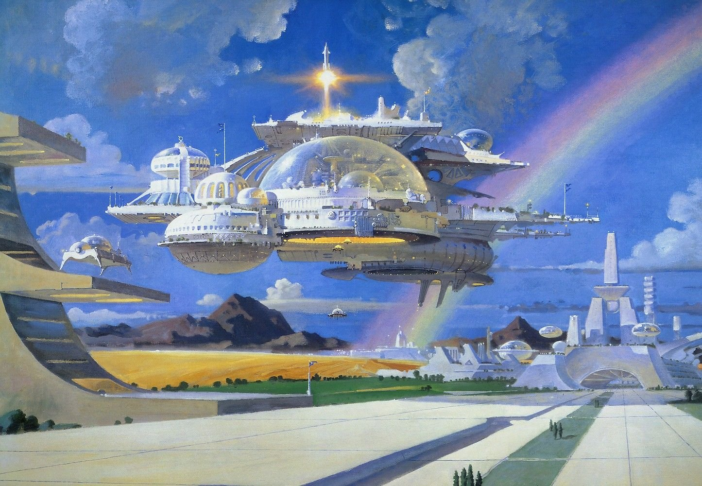

Retro-Futurism and why it's loved
Retro-Futurism is a movement in the creative arts showing the influence of depictions of the future produced in an earlier era. If futurism is sometimes called a "science" bent on anticipating[1] what will come, retrofuturism is the remembering of that anticipation. Characterized by a blend of old-fashioned "retro styles" with futuristic technology, retrofuturism explores the themes of tension between past and future, and between the alienating and empowering effects of technology.
Influence in Design
Retro futuristic art and design are also of interest to creators because they open up endless possibilities for fantasies about possible or impossible futures, but allow them to build their creative ideas around already existing aesthetics that the creator loves and knows well (for example, 1960s retro futurism is about noir). Thus, the retro futurism style mixes aesthetics of the past, problems of the present, and an imaginary vision of the future.
Sub-genres
Retro-Futurism is also a pretty broad term that can refer to any futuristic aesthetic that no longer aligns with the current general expectatives of the future by society. Therefore, Retro-Futurism is separated into several genres by the era of technology they were based on. The primary ones are Steampunk, Dieselpunk, Atompunk, Raygun Gothic and Cyberpunk, and possibly even Y2K Futurism.